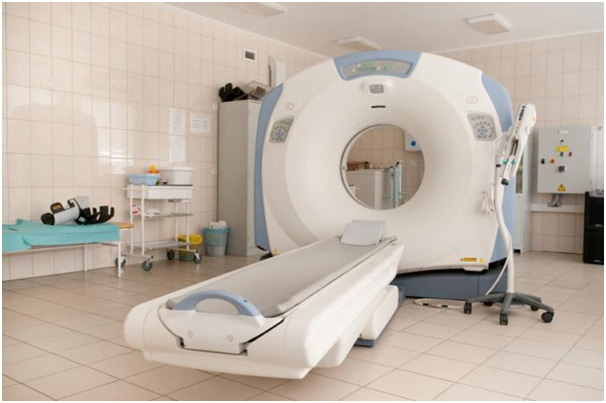
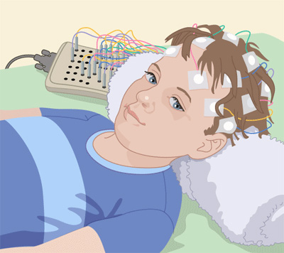
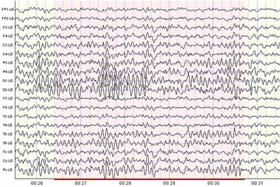
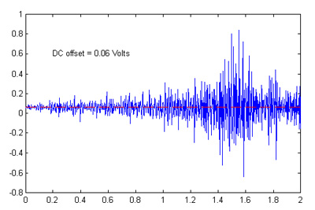
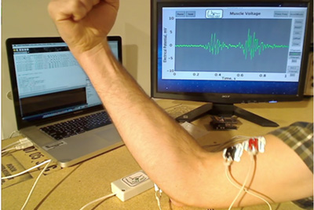
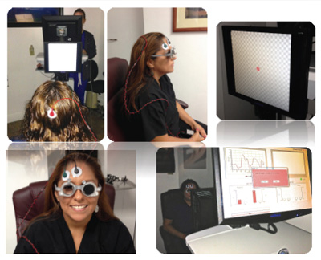
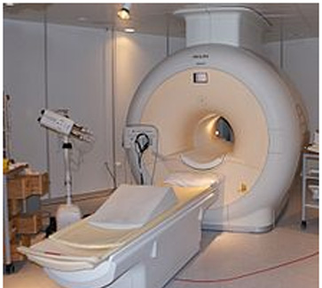

Based on the result of a neurological exam, physical exam, patient history, x-rays of the patient’s chest and skull, and any previous screening or testing, neurologist may order one or more of the following diagnostic tests to determine the specific nature of a suspected neurological disorder or injury.

Computed tomography, also known as a CT scan, is a noninvasive, painless process used to produce rapid, clear two-dimensional images of organs, bones, and tissues. Neurological CT scans are used to view the brain and spine. They can detect bone and vascular irregularities, certain brain tumors and cysts, herniated discs, reasons for epilepsy, encephalitis, spinal stenosis (narrowing of the spinal canal), a blood clot or intracranial bleeding in patients with stroke, brain damage from head injury, and other disorders. Many neurological disorders share certain characteristics and a CT scan can aid in proper diagnosis by differentiating the area of the brain affected by the disorder.
Scanning takes about 20 minutes (a CT of the brain or head may take slightly longer) and is usually done at an imaging center or hospital on an outpatient basis. The patient lies on a special table that slides into a narrow chamber. As the patient lies still, x-rays are passed through the body at various angles and are detected by a computerized scanner. The data is processed and displayed as cross-sectional images, or “slices,” of the internal structure of the body or organ. A light sedative may be given to patients who are unable to lie still and pillows may be used to support and stabilize the head and body.
Occasionally a contrast dye is injected into the bloodstream to highlight the different tissues in the brain. Patients may feel a warm or cool sensation as the dye circulates through the bloodstream or they may experience a slight metallic taste.
Although very little radiation is used in CT, pregnant women should avoid the test because of potential harm to the fetus from ionizing radiation.


This painless, risk-free test can be performed in a doctor’s office or at a hospital or testing facility. Prior to taking an EEG, the person must avoid caffeine intake and prescription drugs that affect the nervous system. A series of cup-like electrodes are attached to the patient’s scalp, either with a special conducting paste or with extremely fine needles. The electrodes (also called leads) are small devices that are attached to wires and carry the electrical energy of the brain to a machine for reading.Patients are then exposed to a variety of external stimuli—including bright or flashing light, noise or certain drugs—or are asked to open and close the eyes, or to change breathing patterns. The electrodes transmit the resulting changes in brain wave patterns. Since movement and nervousness can change brain wave patterns, patients usually recline in a chair or on a bed during the test, which takes up to an hour. Testing for certain disorders requires performing an EEG during sleep, which takes at least 3 hours.
In order to learn more about brain wave activity, electrodes may be inserted through a surgical opening in the skull and into the brain to reduce signal interference from the skull.

Electromyography, or EMG, is used to diagnose nerve and muscle dysfunction and spinal cord disease. It records the electrical activity from the brain and/or spinal cord to a peripheral nerve root (found in the arms and legs) that controls muscles during contraction and at rest.
During an EMG, very fine wire electrodes are inserted into a muscle to assess changes in electrical voltage that occur during movement and when the muscle is at rest. The electrodes are attached through a series of wires to a recording instrument.

An EMG is usually done in conjunction with a nerve conduction velocity (NCV) test, which measures electrical energy by assessing the nerve’s ability to send a signal. This two-part test is conducted most often in a hospital. A technician tapes two sets of flat electrodes on the skin over the muscles. The first set of electrodes is used to send small pulses of electricity to stimulate the nerve that directs a particular muscle. The second set of electrodes transmits the responding electrical signal to a recording machine. The physician then reviews the response to verify any nerve damage or muscle disease. There is no discomfort or risk associated with this test.

Evoked potentials (also called evoked response) measure the electrical signals to the brain generated by hearing, touch, or sight. These tests are used to assess sensory nerve problems and confirm neurological conditions including multiple sclerosis, brain tumor, acoustic neuroma (small tumors of the inner ear), and spinal cord injury. Evoked potentials are also used to test sight and hearing (especially in infants and young children), monitor brain activity among coma patients, and confirm brain death.
Testing may take place in a doctor’s office or hospital setting. It is painless and risk-free. Two sets of needle electrodes are used to test for nerve damage. One set of electrodes, which will be used to measure the electrophysiological response to stimuli, is attached to the patient’s scalp using conducting paste. The second set of electrodes is attached to the part of the body to be tested. The physician then records the amount of time it takes for the impulse generated by stimuli to reach the brain. Under normal circumstances, the process of signal transmission is instantaneous.
Auditory evoked potentials (also called brain stem auditory evoked response) are used to assess high-frequency hearing loss, diagnose any damage to the acoustic nerve and auditory pathways in the brainstem, and detect acoustic neuromas. The patient sits in a soundproof room and wears headphones. Clicking sounds are delivered one at a time to one ear while a masking sound is sent to the other ear. Each ear is usually tested twice, and the entire procedure takes about 45 minutes.
Visual evoked potentials detect loss of vision from optic nerve damage (in particular, damage caused by multiple sclerosis). The patient sits close to a screen and is asked to focus on the center of a shifting checkerboard pattern. Only one eye is tested at a time; the other eye is either kept closed or covered with a patch. Each eye is usually tested twice. Testing takes 30-45 minutes.
Somatosensory evoked potentials measure response from stimuli to the peripheral nerves and can detect nerve or spinal cord damage or nerve degeneration from multiple sclerosis and other degenerating diseases. Tiny electrical shocks are delivered by electrode to a nerve in an arm or leg. Responses to the shocks, which may be delivered for more than a minute at a time, are recorded. This test usually lasts less than an hour.

Magnetic resonance imaging (MRI) uses computer-generated radio waves and a powerful magnetic field to produce detailed images of body structures including tissues, organs, bones, and nerves. Neurological uses include the diagnosis of brain and spinal cord tumors, eye disease, inflammation, infection, and vascular irregularities that may lead to stroke. MRI can also detect and monitor degenerative disorders such as multiple sclerosis and can document brain injury from trauma.
The equipment houses a hollow tube that is surrounded by a very large cylindrical magnet. The patient, who must remain still during the test, lies on a special table that is slid into the tube. The patient will be asked to remove jewelry, eyeglasses, removable dental work, or other items that might interfere with the magnetic imaging. The patient should wear a sweat shirt and sweat pants or other clothing free of metal eyelets or buckles. MRI scanning equipment creates a magnetic field around the body strong enough to temporarily realign water molecules in the tissues. A computer processes this resonance into either a three-dimensional picture or a two-dimensional “slice” of the tissue being scanned, and differentiates between bone, soft tissues and fluid-filled spaces by their water content and structural properties. A contrast dye may be used to enhance visibility of certain areas or tissues. The patient may hear grating or knocking noises when the magnetic field is turned on and off. (Patients may wear special earphones to block out the sounds.) Unlike CT scanning, MRI does not use ionizing radiation to produce images. Depending on the part(s) of the body to be scanned, MRI can take up to an hour to complete. The test is painless and risk-free, although persons who are obese or claustrophobic may find it somewhat uncomfortable.